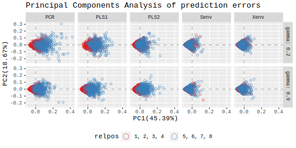
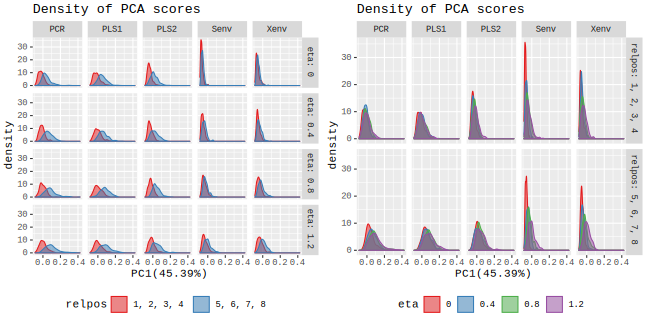

Exploration
Before performing any statistical analysis, this section tries to explore some observed relationship between prediction error, simulation parameters and the prediction methods. Lets us start with visualizing the principal components of prediction errors together with some of these factors. Figure 5 plots first and second principal components of minimum prediciton prediction error for every replicates of all design.
HIGHLIGHTS:
PLOT: pca-scatter (Figure 5)
- Clear indication of effect of position of relevant components on the methods. The effect seems more in case of low multicollinearity than in the case of high multicollinerity.
- Envelope methods (
senvandxenv) are less affected by therelposfactor.
PLOT: pca-density (Figure 6)
- A similar interpretation as the previous plot can be made in the score density. In addition, higher correlation in response (controlled by
etaparameter) yields in higher variation in the score of prediction error. - The plot in the right shows that the envelope methods are able to leverage the effect of correlation between the response while in case of others, the effect is similar in low and high correlation between the responses.

Figure 5: Exploration of Principal Components of Prediction Errors.

Figure 6: Density of Principal Components of Prediction Errors.